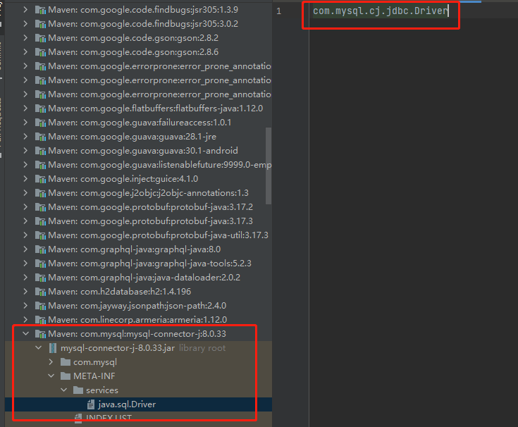

# SPI和线程ContextClassLoader
以下分析基于Java8。
# DriverManager
DriverManager在java.sql包中，是jdk中rt.jar中的类。rt.jar中类都是由启动类加载器（Bootstrap Class Loader）来加载的，下面来分析一下加载该类时做了什么事情。
首先来看static代码块，static代码块会在加载DriverManager类时执行。
/**
* Load the initial JDBC drivers by checking the System property
* jdbc.properties and then use the {@code ServiceLoader} mechanism
*/
static {
loadInitialDrivers();
println("JDBC DriverManager initialized");
}
2
3
4
5
6
7
8
9
loadInitialDrivers()方法中，有一部分是从环境变量jdbc.drivers中读取数据库驱动的配置来做相应处理的，此处不做说明，因为现在也不使用这种方式。我们着重看一下使用SPI的这种方式。
ServiceLoader<Driver> loadedDrivers = ServiceLoader.load(Driver.class);
Iterator<Driver> driversIterator = loadedDrivers.iterator();
/* Load these drivers, so that they can be instantiated.
* It may be the case that the driver class may not be there
* i.e. there may be a packaged driver with the service class
* as implementation of java.sql.Driver but the actual class
* may be missing. In that case a java.util.ServiceConfigurationError
* will be thrown at runtime by the VM trying to locate
* and load the service.
*
* Adding a try catch block to catch those runtime errors
* if driver not available in classpath but it's
* packaged as service and that service is there in classpath.
*/
try{
while(driversIterator.hasNext()) {
driversIterator.next();
}
} catch(Throwable t) {
// Do nothing
}
2
3
4
5
6
7
8
9
10
11
12
13
14
15
16
17
18
19
20
21
22
可以看到，主要就是调用了ServiceLoader.load()方法和一个迭代器的迭代，但是迭代的结果也没有做任何处理，只是迭代，那load()和迭代器都干了什么？我们来看看ServiceLoader。
# ServiceLoader
熟悉SPI的同学应该知道，ServiceLoader.load(Driver.class)会从类路径下找META-INF/services/java.sql.Driver文件，然后读取文件中的内容，文件中的配置就是简单的一个java.sql.Driver的一个实现类。
如果是Mysql，就是这样：

h2就是这样：
通过加载配置的实现类，就可以生成对应的Driver实例，迭代器中返回Driver就是各种驱动类的实现。
下面详细解释一下。
# load()
load(Class service)方法，作为一个静态方法，其实就是一个静态构造方法，而且指定了构造方法的第二个参数是当前线程的ContextClassLoader。
//私有的构造方法
private ServiceLoader(Class<S> svc, ClassLoader cl) {
service = Objects.requireNonNull(svc, "Service interface cannot be null");
//要么用传进来的类加载器，要么用系统类加载器，大多数时候，这两个加载器都是AppClassLoader
//可以看到，此处loader就是线程上下文类加载器
loader = (cl == null) ? ClassLoader.getSystemClassLoader() : cl;
acc = (System.getSecurityManager() != null) ? AccessController.getContext() : null;
reload();
}
//静态构造方法
public static <S> ServiceLoader<S> load(Class<S> service, ClassLoader loader) {
return new ServiceLoader<>(service, loader);
}
//静态构造方法
public static <S> ServiceLoader<S> load(Class<S> service) {
//获取当前线程的ContextClassLoader
ClassLoader cl = Thread.currentThread().getContextClassLoader();
return ServiceLoader.load(service, cl);
}
2
3
4
5
6
7
8
9
10
11
12
13
14
15
16
17
18
19
# 迭代器
迭代器hasNext()和next()最终调用的的是ServiceLoader的hasNextService()和nextService()方法。
private boolean hasNextService() {
if (nextName != null) {
return true;
}
//给configs赋值，找到所有配置文件
if (configs == null) {
try {
//PREFIX="META-INF/services/"
//fullName就是文件路径,例如META-INF/services/java.sql.Driver
String fullName = PREFIX + service.getName();
if (loader == null)
configs = ClassLoader.getSystemResources(fullName);
else
configs = loader.getResources(fullName);
} catch (IOException x) {
fail(service, "Error locating configuration files", x);
}
}
//给pending赋值
while ((pending == null) || !pending.hasNext()) {
if (!configs.hasMoreElements()) {
return false;
}
pending = parse(service, configs.nextElement());
}
//给nextName赋值，方便在nextService方法中使用
nextName = pending.next();
return true;
}
private S nextService() {
if (!hasNextService())
throw new NoSuchElementException();
//取nextName
String cn = nextName;
nextName = null;
Class<?> c = null;
try {
//使用线程上下文类加载器loader加载实现类，比如com.mysql.cj.jdbc.Driver
//对于DriverManager来说，主要就是调用一下这个方法，并不在乎返回的dirver实例。
c = Class.forName(cn, false, loader);
} catch (ClassNotFoundException x) {
fail(service, "Provider " + cn + " not found");
}
//判断配置的类是否是java.sql.Driver的实现类
if (!service.isAssignableFrom(c)) {
fail(service, "Provider " + cn + " not a subtype");
}
try {
//实例化实现类
S p = service.cast(c.newInstance());
//放入到缓存中，一来避免重复，二来避免每次迭代都读文件
providers.put(cn, p);
return p;
} catch (Throwable x) {
fail(service, "Provider " + cn + " could not be instantiated", x);
}
throw new Error(); // This cannot happen
}
2
3
4
5
6
7
8
9
10
11
12
13
14
15
16
17
18
19
20
21
22
23
24
25
26
27
28
29
30
31
32
33
34
35
36
37
38
39
40
41
42
43
44
45
46
47
48
49
50
51
52
53
54
55
56
57
58
59
从代码中可以看到ServiceLoader的迭代器实现，那为什么不接收next()的返回值进行处理呢？
其实在DriverManager中调用迭代器的主要目的还是执行一下这句代码c = Class.forName(cn, false, loader)，对，主要就是加载一个Driver的实现类。
# Driver
以mysql的实现来看一下，类加载的时候发生了什么事。
static {
try {
DriverManager.registerDriver(new Driver());
} catch (SQLException var1) {
throw new RuntimeException("Can't register driver!");
}
}
2
3
4
5
6
7
是的，就是调用了一下DriverManager.registerDriver(Driver driver)方法。当然了，主要是调用这个方法，在其他的实现类了，可能还初始化了一下其他的信息。
最终，就是把各种驱动的实现类实例注册进了DriverManager，后续通过DriverManger获取数据库连接的时候，就可以方便的通过数据库连接的url来得到了。
至于为什么不直接通过ServiceLoader的迭代器获得驱动实例，然后直接注册，也不是很清楚，我想大概有两个原因吧：
- SPI是新加的能力，之前没有，为了保持兼容性。
- 方便各种驱动的实现类在注册的同时，做一些个性化的操作。
# 总结
线程ContextClassLoader使得启动类加载器在加载jdk包中的类时，结合加载各种实现类。
如：DriverManager、ServiceLoader类都是启动类加载器(BootStrapClassLoader)加载的，但是启动类加载器不能加载具体的实现类，如com.mysql.cj.jdbc.Driver，这时候线程ContextClassLoader就起作用了，由它来加载。
从某方面来讲，这违反了“双亲委派”机制，毕竟BootStrapClassLoader是线程ContextClassLoader的父加载器。正常应该是子加载不了的，交给父加载，这种情况却是父加载不了的，交给了子。